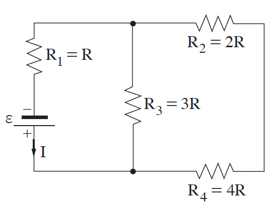

שאלה 3
באיור שלפניכם מוצג מעגל חשמלי, שמחוברים בו ארבעה נגדים וסוללה אידיאלית שהכא"מ שלה ε. עוצמת הזרם העובר דרך הסוללה מסומנת ב-I.

qimage-1.png
א.
קבעו אם המתח על הנגד R3 גדול יותר מהמתח על הנגד R4, קטן ממנו או שווה לו. נמקו את קביעתכם.
(6 נקודות)
ב.
חשבו את המתח על כל נגד, ובטאו אותו באמצעות ε בלבד.
(6 נקודות)
ג.
סדרו את ארבעת הנגדים בסדר עולה, על פי ההספק המתפתח בכל אחד מהם. נמקו.
(6 נקודות)
ד.
מחליפים את הנגד R4 בנגד שלו התנגדות גדולה יותר. קבעו אם תשתנה עוצמת הזרם העובר דרך הנגד R1. אם כן, כיצד היא תשתנה? נמקו את קביעתכם.
(8 נקודות)
ה.
מחליפים את הנגד R4 בחוט מבודד. חשבו את עוצמת הזרם העוברת דרך כל אחד משלושת הנגדים. בטאו את תשובתכם באמצעות I - עוצמת הזרם במעגל המקורי.
(7.33 נקודות)